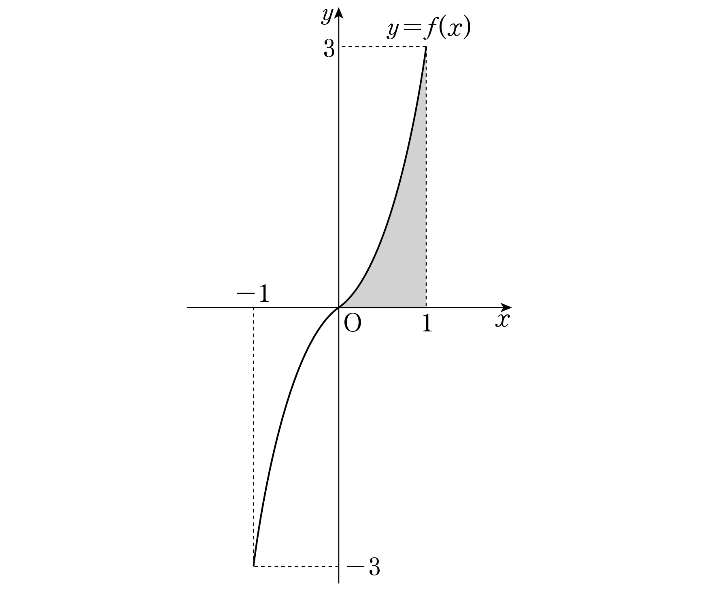

닫힌구간 에서 정의된 연속함수 는 정의역에서 증가하고 모든 실수 에 대하여 가 성립할 때, 함수 가 다음 조건을 만족시킨다.
(가)닫힌구간 에서 이다.
(나)닫힌구간 에서 함수 의 그래프는 함수 의 그래프를 축의 방향으로 만큼, 축의 방향으로 만큼 평행이동한 그래프이다.
(단, 은 자연수이다.)
이고 일 때, 의 값을 구하시오.
[4점]

(나)의 평행이동을 식으로 옮기면 대신 을 넣고 을 더하는 거야.
판단구간 은 인 칸과 인 칸에 걸쳐 있으니까 에서 잘라서 따로 적분하자.
㉠이면 의 그래프가 원점에 대하여 대칭이라, 쪽 정적분은 쪽과 크기는 같고 부호만 반대야. 거기에 ㉡을 넣었어.
의 그래프는 의 그래프를 축의 방향으로 만큼 평행이동한 거야. 그래서 가 부터 까지인 부분은 에서 가 부터 까지인 부분을 그대로 옮긴 모양이라 두 정적분이 같아.
주의은 를 축의 방향으로 만큼 평행이동한 거라, 가 부터 까지인 부분은 의 부터 까지인 부분이야. 부터 까지로 착각하면 부호가 뒤집혀.
에서 나눈 두 정적분을 다시 더하면 끝이야.